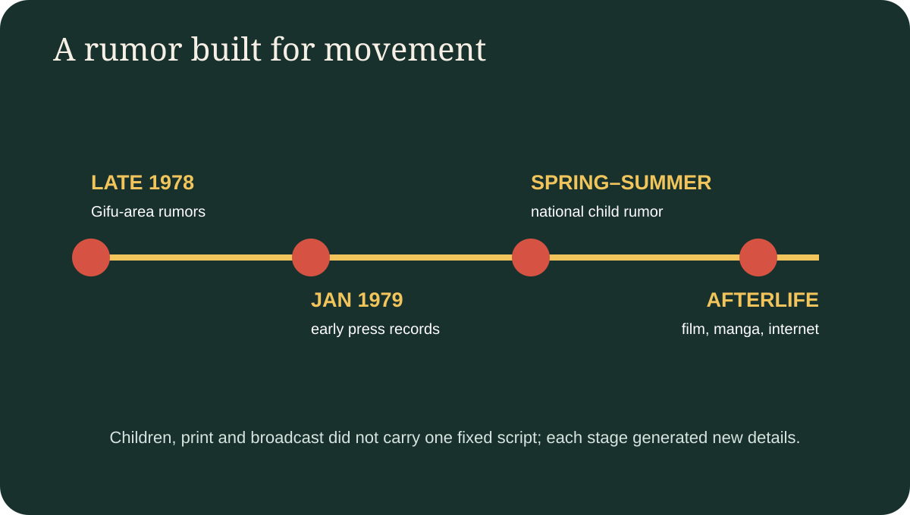
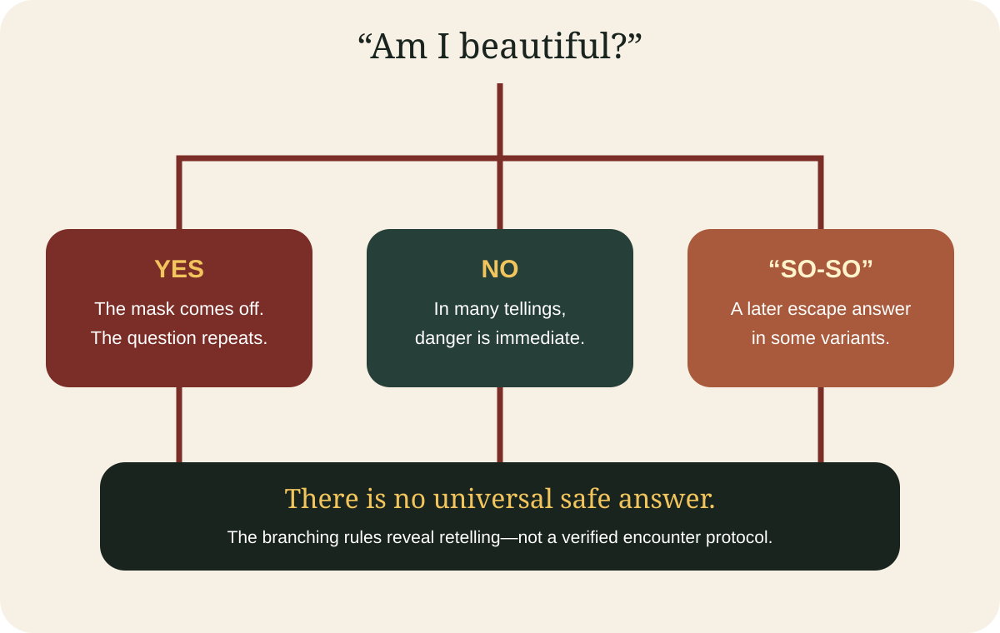

Japan with
Japan withYou are walking home when a woman in a surgical mask steps into your path. “Watashi, kirei?” she asks: “Am I beautiful?” A polite yes seems safest. Then the mask comes away. Her mouth stretches toward her ears. “Even like this?”
This is the compact engine of Kuchisake-onna—literally the “slit-mouthed woman.” In the version remembered from Japan’s great rumor wave of 1979, every answer can become a trap. Say no and she attacks. Say yes and the second question corners you. Try to run and later tellers give her impossible speed. Yet the most revealing detail is not the wound, the mask or even the weapon. It is that listeners kept inventing new ways to answer.
A modern legend, not an ancient biography
Kuchisake-onna is often introduced online with a complete historical origin. One story makes her the beautiful wife of a jealous samurai who cut her face. Another blames a failed cosmetic operation. Others name a car crash, a psychiatric patient or an older supernatural woman. The certainty is attractive; the documentation is not.
The defensible history begins much later. A National Diet Library reference inquiry records that rumors were circulating around Gifu from late 1978 into 1979 and then spread nationwide. It identifies a January 26, 1979 column in the Gifu Nichinichi Shimbun as an early printed reference. The same library investigation could not locate one repeatedly cited June newspaper article where later books said it should be. That small archival failure matters: even citations about a rumor can become rumors.
Folklorist Michael Dylan Foster describes Kuchisake-onna as a “new yōkai” created through late-1970s media circulation. Researcher Yuko Nakao goes further by asking whether she should be treated as a yōkai at all. That category question is useful. The figure borrows the uncanny body of older tales, but she behaves like a modern urban legend: recent, locally adjustable and reported as something that happened to someone only one social step away.

Why 1979 was perfect for her
Japan in 1979 had national television and mass-circulation print, but children’s rumor still moved mouth to mouth through classrooms, neighborhoods and after-school routes. Kuchisake-onna could travel through both systems. A local version entered print; reporting made the scare legible to distant children; those children supplied local roads, clothing, speeds and countermeasures.
That feedback loop helps explain her extraordinary reach. The rumor looked intimate—“a friend of a friend saw her”—while newspapers and magazines made it feel national. NHK Broadcasting Culture Research Institute’s discussion of misinformation uses the 1978–79 explosion among elementary-school children as a classic urban-legend example and notes how mass media can amplify rumor even while reporting on it.
The mask also made the encounter plausible. Surgical masks were ordinary enough to hide a face without immediately marking the wearer as supernatural. The route home created vulnerability without requiring a haunted castle. The legend occupied mundane infrastructure: a road, a dusk commute, a stranger’s question. It transformed an everyday scene children actually navigated into a repeatable threat.
The real trap is a conversation
Here is the answer promised by the title. Kuchisake-onna is unusually durable because the listener must speak. Many ghosts appear; this one asks for a judgment. “Beautiful” seems like a simple adjective, yet the second reveal changes what the first answer means. Courtesy, honesty and self-preservation collide in two lines of dialogue.
The story then invites repair. Some tellers say an ambiguous answer—“so-so” or “average”—confuses her. Other variants use the word pomādo (pomade), throw candy or money, or exploit a distraction. None is a verified safety rule. They are evidence that children were not passive consumers of fear. Each countermeasure returns agency to the teller, and every new escape creates another version worth sharing.

That branching structure resembles a tiny game. There is an opening prompt, a reveal, a second decision and unlockable escape knowledge. But unlike a game, no canonical designer controls the rules. If “yes” becomes safe, a teller can add “Even now?” If “average” works, another can give the woman a faster pursuit. The monster evolves against the audience.
A face made for an anxious decade
Later criticism often reads the legend through gender and beauty: a woman demands evaluation, a socially acceptable face hides a stigmatized one, and violence follows the failure of a beauty test. Those readings are persuasive interpretations, not proof of what every child in 1979 meant. The legend can hold several anxieties at once—strangers, bodily injury, politeness, public appearance and the danger of walking without adult protection.
The surgical mask has also changed meaning. Modern audiences may connect it immediately with infection control and the COVID-19 pandemic, but that association cannot be projected backward as the cause of the 1979 story. The same visual element survives because its social meaning is flexible: privacy, illness, ordinary anonymity, then revelation.
From playground panic to global horror
Once the initial wave faded, Kuchisake-onna did not disappear. Film, television, manga, games and internet lists repeatedly rebuilt her. The 2007 film Carved gave international horror audiences a specific screen version, while countless adaptations changed costume, motive and origin. An adaptation is evidence of cultural afterlife, not a source for the 1979 rumor’s original rules.
Outside Japan, the story is often flattened into “an ancient Japanese demon.” That label makes it exotically timeless but erases what is most interesting: this is modern folklore with a visible media history. Its speed anticipates online virality, yet its variations show the creative work of children speaking before social media existed.
How to tell the story without causing harm
There is no verified Kuchisake-onna site to visit and no responsible reason to identify a real woman as the monster. Do not approach masked strangers, stage scares on public roads, follow children, or trespass in search of an “origin location.” Gifu’s connection is best understood through archives and cultural history, not paranormal tourism.
When you encounter a dramatic version, ask: Was this detail printed in 1979, recorded later from memory, or invented for an adaptation? Does the source distinguish evidence from speculation? A good retelling can stay frightening while admitting uncertainty. In fact, the missing original may be the point: a legend survives because no final answer can close it.
The Japanese phrase watashi, kirei? is short enough to reveal how context changes language. Kirei can mean beautiful, pretty or clean depending on the noun and situation. Explore Japanese wording with Japanese Training Lab, free web practice with no signup. To see ordinary public streets rather than a staged haunting, walk Japan with Yuji on TikTok LIVE; DraMap, made by Yuji, turns Japanese practice into play on iPhone.
Reporting sources
- National Diet Library Collaborative Reference Database: Gifu newspaper record inquiry.
- Yuko Nakao, “Is Kuchisake-onna a Yōkai?” Rikkyo University research note.
- Michael Dylan Foster, Pandemonium and Parade, University of California Press.
- NHK Broadcasting Culture Research Institute: misinformation, rumor and urban legends.
- Nippon.com interview with folklorist Yoshiyuki Iikura on Japanese urban legends.
- Journal for Cultural Research: gender and embodiment in Kuchisake-onna.
Sources and links checked November 5, 2026. Origin stories and escape rules are labeled as variants where the record does not establish fact. Selection and interpretation are Japan Unfolded’s editorial judgment.

See the real streets behind the story.
Yuji edits Japan Unfolded and created DraMap. Watch present-day Japan on TikTok LIVE, then learn Japanese while playing.
Japan Unfolded is independently edited by Yuji Shimizu, creator of DraMap. The app link is publisher promotion; editorial claims are sourced above.